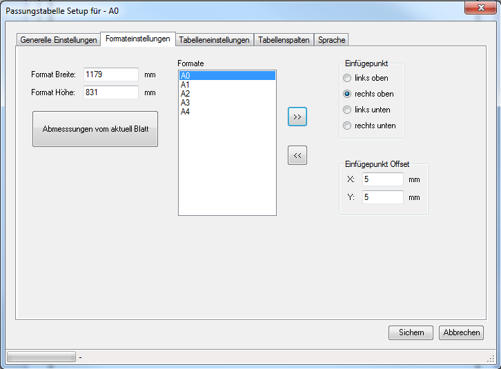

öffnen Sie eine Zeichnung mit dem gewünschten Format und klicken Sie <<
stellen Sie danach alle restlichen Optionen für dieses Format ein
über den Button << kann ein neues Format hinzugefügt werden.
Der Name der Formatvorlage und die Abmessungen, des aktuell in SolidWorks geladenen Blattformats werden übernommen.
über den Button >> wird das aktuell ausgewählte Format gelöscht.
Vorher erfolgt noch eine Abfrage, ob das Format wirklich gelöscht werden soll
mit dieser Option wird die Position des Einfügepunkts definiert
gibt den Offset in X- Y-Richtung an, um den der Einfügepunkt zum Blattrand versetzt werden soll
Beispiel:
ist der Einfügepunkt "rechts oben" und der X-Offset positiv, wird der Einfügepunkt nach rechts verschoben
ist der Einfügepunkt "rechts oben" und der X-Offset negativ, wird der Einfügepunkt nach links verschoben
ist der Einfügepunkt "rechts oben" und der Y-Offset positiv, wird der Einfügepunkt nach oben verschoben
ist der Einfügepunkt "rechts oben" und der X-Offset negativ, wird der Einfügepunkt nach unten verschoben
dadurch kann die Breite des Formats angegeben werden
dadurch kann die Höhe des Formats angegeben werden
es werden die Abmessungen vom aktuell in SolidWorks geladenen Blatt geladen

Mit dem Personal Edition von HelpNDoc erstellt: CHM-Hilfedokumente einfach erstellen